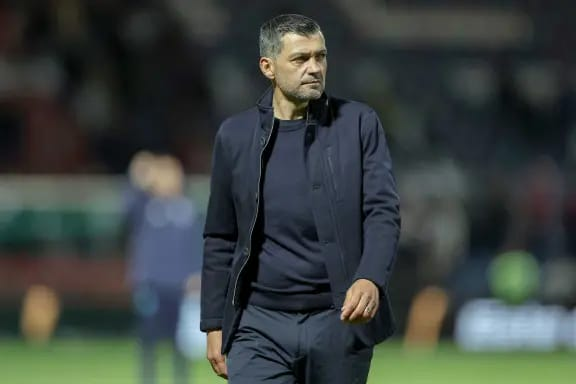

Política
Governo dos EUA rejeita que drones avistados sejam ameaça estrangeira.
O secretário norte-americano da Segurança Interna, Alejandro Mayorkas, rejeitou, este domingo, que os drones avistados nos céus do nordeste dos Estados Unidos e que causaram alarme entre a população representem uma ameaça estrangeira..
A nova lei de política criminal foi publicada, esta segunda-feira, em Diário da República. Fixa os objetivos, as orientações e as prioridades para o biénio 2023-2025.
Quais são as prioridades da nova lei de política criminal?
Há novidades?
Que crimes deixam de ter investigação prioritária?
Quando é que a lei entra em vigor?
Isabel dos Santos contesta "alerta vermelho" da Interpol por se basear em "informações falsas"
A empresária angolana Isabel dos Santos vai contestar o "alerta vermelho" da Interpol, solicitado pelo Estado angolano, por se basear em "informações falsas", revelou, esta quarta-feira, o Consórcio Internacional de Jornalistas de Investigação (ICIJ).
Milei obtém vitória política com aprovação parlamentar de reformas-chave
O Governo do presidente argentino, Javier Milei, obteve esta sexta-feira uma vitória política com a aprovação, após seis meses de um difícil processo parlamentar, de um ambicioso pacote de reformas económicas.
Migrantes brasileiros denunciam aumento dos casos de discriminação e violência em Portugal
Organizações representativas dos emigrantes brasileiros residentes em Portugal vão questionar o Governo do presidente Lula da Silva sobre o "crescimento de casos de discriminação e violência" contra a comunidade brasileira, segundo um comunicado divulgado esta segunda-feira.
Esportes
 Portugal é sétimo no ranking FIFA e Angola regista a maior subida
Portugal manteve a sétima posição no ranking da FIFA, numa classificação em que Angola tem a maior subida, com a seleção africana a progredir 24 lugares, até ao 93.º posto.
Portugal é sétimo no ranking FIFA e Angola regista a maior subida
Portugal manteve a sétima posição no ranking da FIFA, numa classificação em que Angola tem a maior subida, com a seleção africana a progredir 24 lugares, até ao 93.º posto.
Villas-Boas quer andebol e hóquei feminino no F. C. Porto
Presidente do F. C. Porto continua em Luanda, onde manifestou a vontade de ter mais duas modalidades no setor feminino.
Ruben Amorim comenta desejo de Rashford de sair do United
Ruben Amorim, treinador do Manchester United, comentou, nesta quinta-feira, o desejo manifestado esta semana por Marcus Rashford de deixar o clube, após ter falhado o dérbi com o City, no passado fim de semana, por opção técnica. " Se fosse eu provavelmente falaria com o treinador", afirmou o técnico português.

Sérgio Conceição deixou de ser hipótese para treinar o Nantes
Sérgio Conceição estava apontado como o sucessor de Antoine Kombouaré, mas as conversações não terminaram em entendimento.
 Os "palancas negras" derrotaram a Namíbia nos oitavos de final da Taça das Nações Africanas (CAN).
Angola assegurou, este sábado, a presença nos quartos de final da CAN, ao conseguir a primeira vitória de sempre de um país lusófono na fase a eliminar da competição.
Os "palancas negras" derrotaram a Namíbia nos oitavos de final da Taça das Nações Africanas (CAN).
Angola assegurou, este sábado, a presença nos quartos de final da CAN, ao conseguir a primeira vitória de sempre de um país lusófono na fase a eliminar da competição.
Tecnologia
Tecnologia que permite bilhete único está pronta mas sem data para avançar
Interoperabilidade nas áreas metropolitanas fica disponível este mês. Projeto 1bilhete.pt deverá depois alastrar a outras regiões do país.
 Investigadores do Porto criam protótipo que usa IA no diagnóstico de cancro colorretal
Investigadores do Instituto de Engenharia de Sistemas e Computadores, Tecnologia e Ciência (INESC TEC) e do laboratório IMP Diagnostics, no Porto, desenvolveram um protótipo que recorre à Inteligência Artificial (IA) para o diagnóstico de cancro colorretal.
Investigadores do Porto criam protótipo que usa IA no diagnóstico de cancro colorretal
Investigadores do Instituto de Engenharia de Sistemas e Computadores, Tecnologia e Ciência (INESC TEC) e do laboratório IMP Diagnostics, no Porto, desenvolveram um protótipo que recorre à Inteligência Artificial (IA) para o diagnóstico de cancro colorretal.
Coreia do Norte diz que novo satélite espião captou imagens da Casa Branca e Pentágono
A Coreia do Norte garantiu, esta terça-feira, que o satélite espião, lançado pelo país há uma semana, captou imagens da Presidência dos EUA, a Casa Branca, do Pentágono e de outras importantes instalações da defesa norte-americana.
Mulheres na tecnologia: "Quando decidi tirar Engenharia devem ter achado que era tolinha"
Há cada vez mais mulheres na área tecnológica, mas ainda é preciso mudar mentalidades. Geek Girls partilham histórias inspiradoras de quem venceu no setor.
Cultura
O objetivo do PRR é dar resposta às 26 mil famílias em carência habitacional. As autarquias vão ser preciosas na execução dos fundos em proximidade.
Cooperativas renascem para resolver carências da cultura e habitação
O modelo de negócio colaborativo está a crescer e a assumir-se como uma resposta aos desafios atuais, como a crise na habitação ou a precariedade na cultura. O setor agrícola continua a liderar a lista das 2153 cooperativas nacionais que tem crescido nos últimos três anos..
Norte já tem guião para investir milhões na Cultura
CCDR-N desenhou plano que aponta prioridades no âmbito do pacote de fundos europeus até 2030. Vão ser criadas as Rotas do Norte, programa de reabilitação, gestão e promoção
A região Norte já tem um plano regional para a Cultura. Um guião que define as prioridades e as estratégias para os próximos anos e que será fundamental para definir onde serão aplicados os fundos europeus, no âmbito do Norte 2030. A ambição, de acordo com o vice-presidente da Comissão de Coordenação e Desenvolvimento Regional do Norte (CCDR-N), Jorge Sobrado, é chegar a um patamar de investimento de cem milhões de euros.
 Mostra de artista angolano em Braga reflete sobre passado colonial e sua influência atual
A zet gallery, em Braga, abre, dia 30 de setembro, uma exposição do artista angolano Délio Jasse, intitulada “Não Contes à Mãe”. Mostra pretende ser uma reflexão sobre o passado colonial e a sua influência sobre o Portugal do presente.
Mostra de artista angolano em Braga reflete sobre passado colonial e sua influência atual
A zet gallery, em Braga, abre, dia 30 de setembro, uma exposição do artista angolano Délio Jasse, intitulada “Não Contes à Mãe”. Mostra pretende ser uma reflexão sobre o passado colonial e a sua influência sobre o Portugal do presente.
Destaques
Imagens falsas de Trump, Taylor Swift ou Musk? Saiba como as detetar
Donald Trump, Elon Musk e Taylor Swift são as figuras públicas que mais protagonizaram "deepfakes" em 2024, uma prática que manipula a imagem e a voz com ferramentas de inteligência artificial e que tem proliferado na internet e nas redes sociais apesar dos riscos que acarreta para a democracia.
A campanha Setembro Amarelo® salva vidas!.
Novembro Azul juntos na prevenção contra o cancro da próstata
 Outubro Rosa - Juntos na luta contra o cancro do colo do útero
Outubro Rosa - Juntos na luta contra o cancro do colo do útero